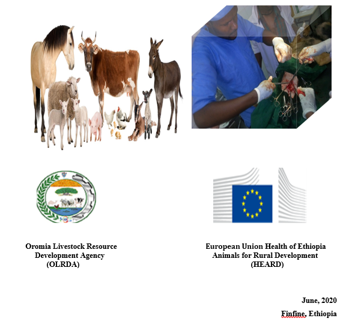

Standard Operative Procedures for Veterinary Surgery
For Veterinary Clinical Practitioners
(First Edition)

This Standard Operating Procedure is Organized and Edited by the following professionals:
Prepared by:
- Jiregna Dugassa (DVM, MVSc, Assist. Professor of Veterinary Surgery, AAU)
- Dessalegn Jarso (DVM, MVSc, Senior Veterinarian, OLRDA)
Edited by:
- Abdi Feyisa (DVM, Assistant Professor of Veterinary Clinical Medicine, AAU)
- Aga Edema (DVM, MVSc, Senior Veterinarian, AAU)
- Shubisa Abera (DVM, MSC, Associate Researcher, NAHDIC)
- Mohammed Aliyi (DVM, Senior Veterinarian, OLRDA)
- Sadiya Haji (DVM, MVS, Senior Veterinarian, OLRDA)
- Kifle Nigusu (DVM, Senior researcher, HRVL)
LIST OF ABBREVIATIONS
PV Paravertebral
SOPs Standard Operating Procedures
OPERATIONAL DEFINITIONS
Analgesics: is a remedy that reduces or relieves pain
Anesthesia: is a state of controlled, temporary loss of sensation or awareness
Asepsis: sum total of the effort to keep the patients’ environment from contamination and the patient from colonization.
Disinfection: cleaning an article of some or all of the pathogenic microorganisms which may cause pathogen
Euthanasia: the act of putting a animal to death painlessly or allowing to die by withholding medical services, usually because of painful and incurable disease.
Veterinarian: a person trained in the medical treatments of animals
EXECUTIVE SUMMARY
Standard operating procedures are written, set of guidelines that specifically describe the techniques and procedures involved in various tasks so as to make it possible and evitable for different professionals consistently and safely. Same manner, the standard Operating Procedures in veterinary surgical practices are set of technical steps that are used to perform and complete different forms of surgical cases having various benefits such as serving as reference for employee training, creates consistency, uniformity, and assuring procedures through mitigation of risk of operational failures and interruptions. It may have the basic elements such as title, responsible person, the list of tools, materials and equipments required for the procedure. So this standard operating procedures is prepared to elaborate basic and common standard operating surgical principles with more emphasis on common surgical conditions expected to be performed so as to serve as input and base line information on pre, peri and post-operative procedures for surgical cases on companion and food animal species for veterinary practitioners found at different Veterinary service centers of districts and Zones of Oromia Region, Ethiopia.
1. INTRODUCTION
Standard operating procedures (SOPs) are written guidelines that specifically describe how to complete various tasks in particular activity. They make it possible and evitable for different people (employees or professionals) to always complete the same tasks consistently and safely. In addition, they make for better future decision making or investigation into how to improve the processes. Normally SOPs should be developed based on fundamental principles of good practice. It may be recalled just what needs to be done and the processes needed to achieve success. For example someone probably implemented cattle health care many times before and knows the idiosyncrasies of the squeeze chute. But not everyone else has this wealth of knowledge. Thus SOPs will provide that bridge of information and serves as a systematic way to make sure that all tasks are carried out consistently.
Standard Operating Procedures (SOPs) in veterinary surgical practices are set of technical steps or a flowchart that aids in describing and completing certain procedure. The basic elements include a SOPs’ title, responsible person, and revision date in addition to the list of tools, materials or equipment needed for the desired procedure. The instructions in the veterinary surgical SOPs should be simple, short statements and be written clearly and concisely with little room for interpretation. Currently in Ethiopia there is high demand of different forms of veterinary services for companion animals and food animals but there are no well described, elaborated, documented SOPs particularly on veterinary surgical procedures. Therefore this SOPs manual is prepared with more emphasis on common surgical conditions expected to be performed so as to serve as input and base line information for veterinary practitioners found at different Veterinary service centers of districts and Zones of Oromia Region, Ethiopia.
Standard operative procedures in veterinary clinical practices have various benefits. Among them it guides and serves as reference for employee training, creates consistency and uniformity to accomplish particular activity, assures procedures through mitigation of risk of job failures and interruptions, promote the basis for effective performance evaluation, improves acceptance of practices, assists everyone to think through the whole process of a task, serves statement of who does what, where, when, why and how, also serves as legal protection since a detailed process is documented, enhances as sources of reference document in accident investigations, creates an opportunity to build unity around attainable standards and goals with procedures to achieve them, it also pave the way to evaluate professional efficiencies and procedural correctness. Not only these but also aids as checklist for co-workers to observe performance and reinforce it if it’s correct and aids in writing job descriptions and identifying skill requirements (ProDairy, 2008).
2. OBJECTIVES
2.1. General Objective
The overall objectives of these standard operative veterinary surgical procedures are to standardize the veterinary surgical approaches in different levels of veterinary clinics across the Oromia region, thereby optimizing veterinary services delivery and quality.
2.2. Specific Objectives
- To clearly describe, document and commercialize standard operative veterinary surgical procedures in selected domestic animals.
- To outline pre-, peri- and post-operative procedures in companion and food animal species.
- To highlight standard operative procedures on surgical asepsis.
- To elaborate standard operative procedures in euthenazation of domestic animals
3. SCOPE
This SOP shall be implemented in the veterinary clinics across Oromia regions to improve veterinary surgical procedures. The document addresses all the important steps executed to undertake surgical techniques starting from patient admission to discharge. To improve quality of veterinary services in both public and private veterinary clinics in the Oromia region are recommended to implement procedures described in this SOP.
4. STANDARD OPERATIVE PROCEDURES IN GENERAL VETERINARY SURGERY
4.1. Preoperative Considerations and Intra operative Care of the Surgical Patient
The selection and preparation of surgical patients require attention to a number of details.
- The patient should always have a complete physical examination, followed by the appropriate laboratory work-up and recording detailed information on patient record format (Annex 1). A thorough history helps determine the extent of the physical and laboratory examinations.
- Once the history, physical examination, and laboratory tests have been completed, the surgical risk will be estimated and a prognosis given.
- Pre-operative procedures have to be performed at a safe distance from the surgical environment in order to prevent contamination with hair.
- Communication with the client is extremely important to ensure the owner's satisfaction after surgery.
- Owners should be informed before surgery of the diagnosis, surgical or nonsurgical options, potential complications, postoperative care, and cost. The client also needs to fill and sign a consent form before the procedure as (Annex 5).
- A waiver signed by the owner, authorizing surgery and accepting anesthetic and surgical risks, is mandatory and should be placed in the medical record.
- Although cost cannot always be predicted because of unanticipated complications, owners should be kept apprised of the animal's status and of procedures that may affect the initial cost estimate.
- Patients should be stabilized as thoroughly as possible before surgery.
- Intravenous fluids are indicated for all animals undergoing general anesthesia and surgery, including healthy animals having elective procedures.
- The need for preoperative antibiotics is dictated by the animal's disease and the procedure being performed.
- Fluid therapy should be initiated if hemorrhage or shock is suspected.
- Administer analgesics according to SOPs.
- Anesthetize the animal, in an area designated for surgical preparation and anesthesia, according to SOPs.
- Apply sterile ophthalmic ointment to both eyes to prevent corneal desiccation.
- Shave an area twice the size of the expected surgical field with an electric razor. Remove all loose hair and debris from the animal.
- Transfer the patient to the designated surgical suite only after the animal has been shaved and coarsely cleaned with a disinfectant scrub
- Perform final preparation of the surgical site after the animal has been positioned on the surgery table.
- Use aseptic technique when performing skin antisepsis.
- Restrict the patient from food and water in Elective Surgery.
Ruminants placed in lateral or dorsal recumbence should have restriction of:
- Roughage for 48 hours
- Concentrate for 24 hours
- Water for 12 hours
- While neonates or animals fed exclusively a milk diet require no food or water restriction.
Mono-gastric patients should have restricted intake from:
- Feed for 24 hours
- Water for 12 hours
4.2. Principles of Surgical Asepsis
During the disruption of dermal integrity of the patient, microorganisms have access to inner tissues. The bacteria that contaminate surgical wounds mainly can originate from the patient's endogenous flora, from operating room personnel, and from the environment. Thus, rules of aseptic technique must be followed to prevent wound contamination.
4.2.1. Preparation of the patient
- Before surgery, the patient should be examined for evidence of bacterial infection, including evaluation of the skin and urinary tract while surgery can be postponed pending resolution of infection if possible.
- The patient’s skin is cleaned preoperatively to reduce surgical site contamination
- Preparation of the surgical site should include hair removal and cleansing to remove gross contamination and dirt prior to antiseptic skin preparation.
- Shaving of hair is avoided because it causes multiple lacerations and skin erosions that are rapidly colonized by bacteria.
- Clipping is done immediately before the surgery and not a day before.
- Surgical scrubs are applied to the area starting at the expected surgical incision and moving outward in expanding concentric circles, moving towards the periphery. This maneuver is repeated, alternating rinse solutions with the antiseptic until the sponges are free of visible soiling.
- Perform three scrubs with a non-soap solution (e.g., alcohol, diluted non-soap antiseptic or sterile water) and three alternating rinses with an antiseptic soap solution (e.g. 2% chlorhexidine solution or povidone-iodine solution).
- Overzealous scrubbing should be avoided as it brings bacteria from within the hair follicles to the surface and causes irritation and abrasions that are rapidly invaded by bacteria. Then a final application of the disinfectant is done and left in place.
- Commonly used preparations are tinctures of chlorhexidene and iodine.
- Surgical drapes should prevent the movement of debris and bacteria from non-sterile areas onto the surgical field for the duration of surgery. They should be economical, easy to sterilize and should retain their barrier properties if they are washed, sterilized and reused.
- Cotton muslin drapes are routinely used in veterinary practice. However, they lose their effectiveness once they become wet and can allow passage of bacteria through them (strikethrough).
4.2.2. Preparation of the surgical instruments
- Regardless of the sterilization technique used, instruments and linens must be cleaned off gross contamination.
- Instruments should be cleaned manually or with ultrasonic cleaning equipment and appropriate disinfectants as soon as possible after surgery and linens should be laundered.
- Packaging materials should be designed for the type of sterilization process being used.
- Sterilize all surgical instruments, gauze, drapes, etc. prior to surgery.
- Clean instruments prior to sterilization to remove organic material.
- Place instruments to be sterilized in self-sealing sterilization pouches or wrap.
- The use of internal chemical indicators is recommended to ensure the sterilizing agent has penetrated the packaging material and actually reached the instruments inside.
- Achieve sterilization by different forms such as heating, boiling, chemicals and gases depending on the instruments.
4.2.3. Preparation of the surgical team
- Careful preparation of the surgical team and non-sterile personnel should be carried out before commencing surgery.
- Scrub suits, caps, masks, sweat bands; shoe covers, gowns and gloves have to be worn.
- Hand scrub should be performed with nonirritant antiseptics and all surfaces of the hands as well as forearms below the elbow should be exposed to antiseptic scrub. The ideal scrub time is unknown, but 2 to 5 minutes seems to be safe and effective, depending on the agent used.
- Fingernails have to be kept short, clean and jeweler should be removed.
- Gloves have to be worn by the operating team to protect the patient from the microorganisms on the operating team’s skin.
4.2.4. Preparation of operation theatre
- There should be separate induction, preparation and recovery rooms.
- The operating room should provide an environment as free as possible from bacterial contamination.
- Floors and walls should be surfaced so that cleaning is efficient, and drains should be placed so that water does not pool anywhere in the surgical suite after cleaning.
- All the surfaces in the operating room should be carefully disinfected daily, and the tables are disinfected in between operations.
- Operating room doors should remain closed during the surgery, and traffic through the room should remain minimal. Air within the operating room should be under mild positive pressure, so that when the doors open, air flows out of the room rather than into it.
4.3. General Surgical Principles
- Veterinarians and all animal care staffs should ensure that good surgical techniques are practiced including thorough surgical approaches, asepsis, gentle tissue handling, minimal dissection of tissues, appropriate use of instruments and its sterilization pre and post surgery, effective hemostasis, and proper use of suture materials and patterns as well as proper post operative care of the surgical patients.
- A minimum of three individuals should be present during procedures.
- The surgeon performing the procedure and assistant surgeon assists the major surgeon.
- The anesthetist inducing, monitoring, maintaining, and adjusting anesthesia.
- Procedures should be performed under the oversight of the veterinary care staff.
- Procedures must be performed in an operation theatre unless under certain emergency circumstances.
- All surfaces and equipment in the dedicated surgical suite should be cleaned and disinfected prior to each procedure.
- The area should be uncluttered and free of equipment not related to surgery.
- Circulation in this area should be kept to a minimum during surgical procedures to prevent unnecessary interruptions and creation of air turbulence and contamination of the surgical field.
- Prior to surgery, verify the depth of anesthesia by loss of the palpebral reflex, pedal withdrawal reflex, and jaw tone, heart rate and blood pressure.
4.4. Surgical Restraint
Unlike ruminants small animal needs proper way of chemical restraining specially pre operation and intra operation. However as the physical restraint of the ruminant alone is not adequate enough for surgical procedure the combination of different forms chemical restraining method is briefly described.
4.4.1. Ruminant Anesthesia
Purpose
Anesthesia is used for restraint of fractious animals and to prevent unnecessary pain as well as suffering. Local, regional, or systemic anesthesia may be combined with sedatives depending on the desired surgical procedure to be performed and the temperament of the animals.
Responsibility
Veterinarian, Para veterinarian and Animal health assistants
Materials
Analgesics, anesthetics, sterile ophthalmic ointment, Stethoscope, Thermometer, Pulse oximeter,
Blood pressure monitor, warm-water circulating pad, emergency airway equipment, Xylocaine spray,
Endotracheal tubes and syringes.
Procedure and Technique Description
- Local anesthesia alone is useful when combined with sedatives to facilitate invasive surgical procedures. It may be achieved by direct infiltration of anesthetic solution on to topical skin or mucus membrane, directly injecting into the tissues to be surgically manipulated after the hair is removed from skin and a surgical scrub performed.
- A final scrub is applied following the application of anesthetic.
- Injections must be performed aseptically using a needle of an appropriate size and gauge depending on the animal species.
- The needle is introduced at the site of manipulation and advanced forward while injecting anesthetic solution so that the anesthetic solution is dispersed in the tissues ahead of the needle as it is introduced. Only enough anesthetic to cause a slight bleb in the tissues needs to be injected in any one site.
- Additional coverage may be obtained by withdrawing the needle so that it almost but incompletely comes out of the animal, redirecting the needle, and then advancing the needle in a new direction injecting as the needle goes in.
- Do not move the needle back and forth sideways while deeply in the tissues to redirect it as this will cause subcutaneous or intramuscular lacerations and significant discomfort. A longer needle reduces the number of times the needle must be reintroduced through the skin, which is the most objectionable part of the procedure to the animal.
- This may be accomplished using several different types of blocks - line blocks and field blocks in the forms of 7 blocks (when used on the animal’s right side), reverse 7 (when used on the animal’s left side, also known as inverted L).
- A Line Block: is performed by injecting a local anesthetic solution into the skin, subcutaneous tissues, and muscles along the incision line. The needle should be introduced parallel to the desired line of anesthetic placement, injecting as the needle is advanced forwards to reduce pain from the needle traversing the tissues. Once the maximum depth of the needle is reached, the needle is withdrawn. To extend the line block further reintroduce the needle into the area at the end of the already blocked tissues in the desired direction of the extension and proceed as described for the initial injection. Repeat as necessary to achieve the desired length of the block. Line blocks require 10-15 minutes to take effect.
- A Reverse 7 Block: is used for left flank laparotomy or any procedure on the left side of the animal. For a laparotomy, anesthetic is injected as described for a line block along the entire length of the caudal surface of the last rib and extends caudally at the level of the transverse processes of the lumbar vertebrae. Anesthetic should be placed in the skin, muscle, and peritoneum. A 7 block is used for right flank laparotomy. The pattern of injection is the same as described for a reverse 7 block, except that a 7 is formed rather than reverse 7.
It is performed by anesthetizing the nerves innervating the tissues to be manipulated by using local anesthetics by different techniques depending on the particular organ/s to be surgically manipulated.
A Paravertebral Block (PV): is performed by injecting anesthetic at each nerve arising from last thoracic and lumbar processes. It can be conducted in proximal and distal PV ways.
- An 18 gauge, 4.0 inch needle is required. A 12 gauge, 0.5 inch needle can be used as a cannula in the skin.
- The nerves to be blocked for paralumbar fossa anesthesia are T13, L1, and L2.
- In an adult bovine, the needle is introduced 2 inches lateral to the spinous process and off the anterior edge of the transverse process of L1, off the posterior edge of the transverse process of L1, and off the poster edge of the transverse process of L2.
- If the incision site is in the posterior paralumbar fossa, L3 should also be anesthetized in a manner similarly to L2.
- The needle is walked off the edge of the transverse process at each injection site and then inserted 0.5 inches deeper to pierce inter transverse fascia.
- In the adult bovine, the ventral branch of the nerve is blocked with 5-10 ml of local anesthetic.
- The needle is then withdrawn approximately 1 inch and another 5 ml of anesthetic is injected to block the dorsal branch.
- Failure to block a dorsal branch is identified by sensitivity in the dorsal half of the paralumbar fossa.
- Failure the block a ventral branch is identified by sensitivity in the ventral to mid paralumbar fossa.
- General anesthesia in ruminants requires withdrawal of food for 24-48 hours prior to anesthesia and withdrawal of water for 12-24 hours prior to anesthesia to reduce the likelihood of aspiration of rumen contents.
- Once anesthetized the head should remain lower than the neck, the mouth flushed with water to remove ingesta, and an endotracheal tube placed.
- Injectable general anesthetics as sole agents are not well developed for ruminants.
- Chloral hydrate is a moderate sedative but has poor analgesic effects.
- Ketamine provides excellent restraint, but muscles remain rigid and there is poor visceral analgesia. As a result, injectable general anesthesia is usually a combination of products.
- Inhalant anesthetics (halothane, isoflurane) are the safest choice for general anesthesia, but are more expensive and require a precision vaporizer, closer anesthetic monitoring, and more skill on the part of the anesthetist. For instance the combination of the following drugs in sheep and goats can be performed during surgery.
- Guaifenesin / Ketamine / Xylazine Drip
- Dosage - 50 mg/ml guaifenesin, 2 mg/ml ketamine, 0.1μ/ml xylazine intravenous drip at 5-2 ml/kg/hr
- Duration of Anesthesia – 1-1.5 hours or longer
- Withdrawal – no defined times are available.
4.4.2. Small animal Anesthesia
Purpose
This Standard Operating Procedure (SOP) describes methods for anesthetizing dogs.
Responsibility
Anesthetist
Materials
Material or equipment to provide or conserve body heat (e.g. warm-water circulating pad), Ophthalmic ointment (natural tears), Gas anesthesia machine (calibrated within the last 12 months) with adequate gas scavenging system or filter, Tight-fitting mask, buprenorphine, Carprofen, Acepromazine, Intravenous catheter, Ketamine, Diazepam, Midazolam, Pentobarbital, Propofol, EMLA cream, Xylocaine spray, Sterile lubricant, Endotracheal tubes cuffed various sizes and Laryngoscope.
Procedures
Preoperatively perform a thorough physical exam and obtain an accurate body weight. Withdraw food (not water) for 12 hours prior to anesthesia in order to reduce the risk of aspiration of stomach contents. Very young animals (less than 10 weeks) and/or small animals (less than 2 kg) should be fasted for only 1 to 2 hours due to the risk of hypoglycemia. The main procedures are dealt as below.
- Premedication:
- Administer intramuscularly or IV depending on the drug
- For minor to moderately invasive surgeries: buprenorphine 0.01 to 0.02mg/kg
- For more invasive surgeries: hydromorphone 0.05 to 0.2mg/kg
- Acepromazine: 0.05 to 0.1mg/kg or midazolam 0.2 to 0.4m/kg
- Give NSAIDs such as carprofen 4mg/kg SC or meloxicam 0.2mg/kg
- Intravenous (IV) catheter placement
- To provide IV fluid therapy and venous access during surgery.
- Apply EMLA cream and cover with plastic cling wrap (e.g. Saran® wrap) over the venipuncture site at least 15 minutes prior to placing the catheter. Observe the animal or apply a device (e.g. Elizabethan collar) to prevent the dog from removing or swallowing the plastic.
- Insert IV catheter and secure in one of the following locations:
- For peripheral IV access sites: use either the cephalic or saphenous vein.
- For central venous access site: use the external jugular vein.
- IV fluid administration: Administer isotonic saline (0.9% saline) or Lactated Ringer’s Solution at a rate of 10mL/ kg//hour.
- Induction and injectable anesthesia: Can be used alone for short, non-invasive procedures as well as for induction prior to facilitate intubation.
Table 1: Common Injectables and Few Combinations Used For Induction
|
Drug
|
Dose
|
Route
|
Duration of effect
|
Notes
|
|
Ketamine-Diazepam
|
3mg/kg 0.3m/kg
|
IV
|
20 minutes
|
May be mixed in same syringe, Laryngeal reflexes preserved.
|
|
Dexmedetomidine
|
0.01 to 0.08mg/kg
|
IV, IM
|
Dose dependant
|
Profound drop in heart rate.
Reversed with equal volume of Atipamezole
|
|
Pentobarbital
|
20 to 30 mg/kg
|
IV
|
30-45 minutes
|
Long acting. Apnea may result, observe respiration following administration.
|
|
Propofol
|
2 to 8mg/kg (dose to effect) 0.2 to 0.4mg/kg/min for IV infusion
|
IV, slowly
|
Until discontinued
|
May cause breath holding
|
- Endotracheal intubation
- Placement of an endotracheal tube is recommended for delivery of isoflurane anesthesia.
- Cuffed endotracheal tubes are preferred as they reduce the possibility of aspiration of saliva or stomach contents.
- Lubricate endotracheal tube with sterile lubricant.
- With the animal in sternal recumbency, extend the neck and head so that they are in a straight line.
- While holding the upper jaw, pull the tongue forward and down so that the epiglottis is visible.
- Use the laryngoscope to disengage the epiglottis from the soft palate, exposing the glottis and vocal chords.
- Spray the laryngeal folds with 2% xylocaine to help decrease laryngospasm (spasmodic closing and opening of the glottis).
- Insert the endotracheal tube gently past the vocal folds into the trachea (this can be timed with exhalation).
- Confirm proper placement by checking for the animal’s breath as it exits the endotracheal tube during exhalation.
- Secure the endotracheal tube by tying a piece of gauze around the tube then behind the animal’s head.
- Inflate the cuff of the endotracheal tube.
- Verify adequate ventilation of both lungs by auscultation.
- Maintenance By using Inhalant Anesthetic machine
- Use the endotracheal tube or mask connected to the Bain circuit or recirculating circuit.
- Adjust the flow meter to 0.4 to 0.8 L/min for Bain; adjust to 50ml/kg/min fore circulating systems.
- Adjust the isoflurane vaporizer to 1.5 to 2.0% (dose to effect).
- Apply ophthalmic ointment (natural tears) to both eyes to prevent dryness and damage to the cornea.
- Recovery
- Turn off the isoflurane vaporizer but keep the animal on oxygen for 2 to 5 minutes or longer if oxygen saturation levels are low.
- Remove the endotracheal tube as soon as the animal shows signs of impending arousal, i.e., when reflexes begin to return.
- Keep animals warm by providing a heat source until the animal has recovered from anesthesia.
- Never leave an anesthetized animal unattended.
4.5. Surgical Procedures, Monitoring, and Supportive Care
- Use efficient surgical planning to decrease surgical time, tissue contamination, and tissue damage.
- Handle tissues gently.
- Use a scalpel blade or scissors to make the smallest possible incisions.
- Use appropriate suture technique:
- Use either absorbable or monofilament suture if the suture will be buried in tissue.
- Place sutures evenly and as close to the tissue edge as possible to prevent obstruction of blood flow.
- Suture size depends on size and activity level of the animal.
- Close tissue layers separately. Suture the subcutaneous tissues separately from the skin in order to decrease dead space. For instance during laparatomy, Peritoneum/abdominal muscle layer(Vicryl, PDS, Polypropylene, Subcutaneous tissue: Vicryl, PDS) and Skin(Polyamide-nylon, PDS, Vicryl, skin staples).
- Use an alternative to skin sutures, such as a subcutaneous/intradermal closure technique, if skin sutures are not necessary. Skin sutures can cause an animal to chew or scratch at the incision site.
- Maintain aseptic conditions during all surgical procedures.
- Continuously monitor heart rate and rhythm, blood pressure, respiratory rate and depth, and temperature and record on intraoperative patient monitoring format (Annex 3).
- Monitor hemodynamic parameters to assure adequate gas exchange:
- Mucous membranes: pink and moist
- Capillary refill time: less than 2 seconds
- Oxygen saturation (SpO2)
- Document these parameters at least every 10 minutes (format annex 3).
- Maintain normal body temperature by the use of warm circulating water blankets, thermal pads, and/or warm IV fluids. Do not use electric heating pads as they are a less consistent, safe, and reliable source of heat.
- Administer IV fluids to maintain adequate hydration and circulating blood pressure.
- Adjust the depth of anesthesia according to the monitored parameters (presence of reflexes, respiratory rate and breathing pattern, and heart rate).
- In the case of respiratory or cardiac arrest, stop anesthesia, administer oxygen, and begin resuscitation efforts immediately. Calculate the dosage of emergency drugs before the start of anesthesia.
4.6. Postoperative Care
- Postoperative care begins with recovery from anesthesia, and may extend from days to weeks depending on post-surgical outcomes.
- Place animals in a clean, quiet environment for anesthetic recovery.
- Continuously observe the animal and monitor temperature, heart rate and respiratory rate until the animal can maintain a patent airway and sternal recumbency.
- Emergency airway equipment must be available in the anesthetic recovery area.
- Administer oxygen as needed.
- Keep the animal warm and dry in order to prevent hypothermia. Care should be taken to not overheat or burn the animal. Over-the-counter heating pads are prone to burning animals and cannot be used for this reason. Examples of surgical thermoregulation devices include:
- Water-circulated heating pad
- Air circulating heating blanket
- Surgical thermal barrier
- Administer analgesics post-surgically and for the next 72 hours or longer
- Determine the need for further supportive care, such as fluids, electrolytes, antibiotics, etc., based on the animal’s condition and the procedure performed.
- Examine the wound daily until completely healed.
- Do not leave the recovering animal until it is conscious, able to remain upright and to protect its own airway without assistance.
- Reassess the animal‟s well-being at intervals after surgery, including the need for analgesia, fluids, warmth or modified diet.
- Non-absorbable skin closures must be removed at the appropriate interval post-operatively.
- Remove skin sutures or staples (if any) after 10-14 days.
4.7. Post-Operative Complications and Their Management
4.7.1. Shock
Shock is a result of a collapsed circulatory system and can occur due to stress, blood loss, fluid loss, low blood pressure and a damaged heart.
Measure to be taken: first aim at reducing stress (e.g. covering the animal’s eyes), stopping any visible signs of bleeding and then making sure the animal is kept warm and quiet. Not only these but also administer IV fluids to animals in shock and emergency drugs like epinephrine.
4.7.2. Hypothermia
Hypothermia is caused by a lowering of the body temperatures. So take the following measures:
- The animal needs to be gradually warmed with a constant artificial heat source such as body contact in a handling bag (if no other heat source available), heat lamp or a hot water bottle. It is preferable that the heat source comes from outside of the holding container and directed at one end so the animal can move closer to or away from the heat source.
- If the heat source is inside the holding container is must be padded or shielded to avoid the animal burning itself. Care must be taken not to have any electrical connections or wiring within reach of the animal.
- Always keep a very close watch as overheating is a danger. Once the animal has been warmed to its normal body temperature, high energy fluids can be offered.
4.7.3. Dehydration
Dehydration is the excessive loss of fluid from the body. Before rehydrating the patient use the following measures.
- Check for signs of dehydration by pinching the skin of the animal to check for elasticity ad nature of bouncing back.
- Observe for presence of sunken or dry eyes, a glazed look and dry tacky gums.
- Wait an animal until it is warm and stabilized before administering fluid therapy
- If they are unable to drink by themselves you can get your fingers and touch the animal’s mouth, this usually results in a swallow response but never pour water down an animal’s throat
- The severity of dehydration will determine the most appropriate course of action. In all cases, basic and immediate sort of treatment as soon as possible is the preferred option however seeking veterinary care or euthanasia should be considered if the prognosis is poor.
4.7.4. Hyperthermia
Severe changes (renal failure, hypotensive shock, coma and death) can develop rapidly with hyperthermia. During such condition, the animal must be placed in a cool quiet environment, gradually reducing the body temperature with water and wet towels and cool circulating air.
4.8. Wound Management
Normally wound is an injury to living tissue caused by a cut, blow, or other impact causing disruption of the normal architecture of the body of animals with various degree levels. It can be classified in different ways but the management depends on the nature and duration of the wounds as described in table 2. Basically wound can be closed with closure materials or managed as open wound management principles. Practically one of the biggest problems with wounds is the possibility of infection. The speed of wound healing is rarely increased, but factors that slow wound healing can be controlled.
Purpose
This standard operative procedure is prepared to highlight the wound management to be performed as first aid in some the wound types in veterinary clinical practice.
Responsibility
Veterinarians and animal health care professionals
Materials
Suture materials, antiseptics, forceps, scissors, bandages and gauzes.
Procedure
A summary of common types of wounds and their management is contained in Table 2.
Table 2: Common wounds and their management
|
Nature of wound
|
Description and management
|
|
Bruise
|
A closed wound with bleeding below the surface of the skin. If not extensively damaged, or not causing disability, then it’s better to apply topical antiseptic lotion with systemic antibiotic therapy.
|
|
Abrasion
|
An open wound with the outer layer of skin and underlying blood vessels exposed. The wound should be cleaned with dilute antiseptics with systemic antibiotic therapy.
|
|
Cut
|
An open wound caused by something sharp, where the skin, soft tissue or muscle is severed. The wound needs to be washed with diluted antiseptic solution thoroughly and the animal can be released. If the cut is large or deep it will require veterinary care or euthanasia.
|
|
Laceration
|
An open wound (e.g. caused by wire, teeth or claws) where the skin and underlying tissue are damaged. The wound should be cleaned thoroughly. If the laceration is extensive it will require veterinary care or euthanasia.
|
|
Puncture
|
An open wound caused by blunt or pointed objects in which the skin and underlying tissue is damaged, as well as possibly organ damage. The wound should be washed thoroughly and followed by regular dressing. If the laceration is extensive it will require veterinary care or euthanasia.
|
|
Tear
|
An open wound caused by something sharp. The skin and other soft tissue will be partially or completely torn away. The skin should be returned to its original position and a pressure bandage applied. The animal may require veterinary care or euthanasia.
|
|
Embedded object
|
An open wound in which an object has embedded itself. Do not try and remove the object. The animal will require veterinary care or euthanasia
|
4.9. Euthanasia
Euthanasia should occur in such a way that minimizes an animal’s pain and stress. To meet this requirement, the animal should be rendered unconscious as quickly as possible
4.9.1. Small and large animal euthanasia
Purpose
This Standard Operating Procedure (SOP) describes acceptable procedures for euthanasia of large animal species such as swine, sheep, goats and cattle. It ensures that animals are euthanized in the most humane way possible.
Responsibility
Veterinarians and animal health professionals.
Acceptable Methods by Species
- Cat and Dog: Barbiturate overdose, Overdose of inhalant anesthetic and Exsanguination under general anesthesia
- Sheep, goat, pig, cattle: Barbiturate overdose, Exsanguinations under general anesthesia and Physical methods
Procedures
- Barbiturate overdose:
- Sedate animals prior to barbiturate overdose.
- Pentobarbital sodium is the main agent of injectable commercial euthanasia solutions.
- Inject pentobarbital at a dose of 100 to 120mg/kg.
- Confirm euthanasia before disposing of the carcass by observing that there is no respiratory movement for at least 3 minutes, and that the heartbeat has ceased.
- Overdose of inhalant anesthetic:
- The following gases can be used: halothane, isoflurane, methoxyflurane, other halogenated inhalants.
- Sedate animals prior to exposure to inhalant anesthetics.
- Expose the animal to a high gas concentration using an anesthetic vaporizer.
- Vapors are inhaled until respiration ceases and death ensues.
- Confirm euthanasia before disposing of the carcass by observing that there is no respiratory movement for at least 3 minutes, and that the heartbeat has ceased.
- If the animal is not dead (or for additional security), follow inhalant anesthesia overdose by another method of euthanasia, such as exsanguination.
- Exsanguination:
- Deeply anesthetize the animal as per SOP.
- Verify that withdrawal reflex is absent by pinching the toes with hemostats of non-hooved animals and pinching leg tendon of a hooved animal.
- Withdraw the maximum volume of blood; volume should be sufficient to cause death.
- Confirm euthanasia before disposing of the carcass by observing that there is no respiratory movement for at least 3 minutes, and that the heartbeat has ceased.
- If the animal is not dead (or for additional security), follow exsanguination by another method of euthanasia, such as overdose of barbiturates
- Physical methods for licensed slaughter house:
- Use physical methods only on food animals for agricultural use.
- Animal transportation and slaughter must comply with federal and provincial laws and regulations.
4.10. Record Keeping
- Document the Patient history on case record and management format (annex 1)
- Record the preoperative assessment and intraoperative activities on the format as in (Annex 2)
- Document surgical procedure in the animal’s medical record forms as found in annexes.
- Record and document the overall follow up as in format (Annex 4).
5. STANDARD OPERATIVE PROCEDURES IN REGIONAL VETERINARY SURGERY
5.1. Surgery of Head and Neck
5.1.1. Amputation of horn in cattle
Purpose
To elaborate and describe the standard operative procedures used during surgical amputation of horn in adult cattle due to various indications where this surgical treatment is plausible solution.
Responsibility
Veterinarians and Animal Health Care Professionals.
Special instruments
- Gigli wire saw
- Bone chisels and osteotome
- Mallet
- Bone rongeur and bone cutter
- pressure bandage
Anesthesia and Animal Control
- Conduct cornual nerve block along with sedation and keep the animal in the form of Lateral recumbence with the affected horn upwards.
Description of Surgical Procedures
- Put small 1-2 inches long incision on the skin of lateral aspect of the base of horn over the course of cornual artery.
- The cornual artery is located and ligated.
- The incision is extended at right angle on both sides to circumcise the base of horn.
- Another small one-inch incision is made at right angle of this circular incision just on the opposite side of the very first incision to create skin flap.
- The skin is undermined sharply to expose the site of amputation.
- Now gigli wire saw is applied at the base of horn, as near to frontal bone as possible and the horn is amputated.
- The bleeding, if any, is controlled.
- The horn core is trimmed with chisel and hammer if required to appose the skin flaps.
- The wound is cleaned and the skin flaps are sutured together either with simple interrupted or vertical mattress sutures over the wound.
- Post operatively perform regular antiseptic dressing and a course of antibiotics.
5.1.2. Extirpation of Eyeball in Cattle
Purpose
To delineate standard operative procedures used for eye extirpation of cattle due to various ailments that cannot respond to medical treatment and may causing continuous irritation as well as lacrimation.
Responsibility
All veterinarians and Animal Health Care Professionals.
Materials
Suture materials, 2%loidocain hydrochloride, scissors, forceps, sterile gloves, gauzes, bandages, antiseptics and antibiotic.
Anesthesia and Animal Control
- Control the animal in lateral recumbence with the affected side up.
- Sedate/tranquilize or general anesthesia can be administered depending upon the temperament of animal.
- Analgesia at the site of operation is achieved by auriculopalpebral and retrobulbar nerve blocks or by infiltration of local anesthetic into upper and lower eye lids and deeper tissues at the site of incision, in case sedatives or tranquilizers are used.
Description of the Procedure
- The upper and lower eye lids are sutured together with a continuous suture leaving the suture ends at least 15-20 cm long for grasping and applying traction during the operative procedure.
- An incision completely encircling the eye lids is made approximately 1/2 cm from the margin of the lids
- The incision is extended around the entire circumference of the lid margin between the orbital rim and eye ball by blunt dissection taking care that conjunctiva is not punctured.
- Hemorrhage is carefully controlled either by ligation or forci pressure.
- Conjunctiva from the lids back to its attachment to the orbit 'is separated leaving its attachment to the border of the lids. The dissection is carried out back to the point of insertion of the conjunctiva to the orbit.
- All the muscles of the eye are incised with scissors and finally the optic nerve is cut. Before cutting, the optic vessels are ligated firmly in order to control the haemorrhage
- All the periorbital fat is left in place.
- The haemorrhage is controlled with gauze pressure temporarily packed up inside the orbital cavity. All the blood clots are removed from the cavity.
- Temporary pack is removed and a 70-80 cm long piece of bandage impregnated in antiseptic lotion is inserted into the orbital cavity. Outer skin edges of the lids are sutured with interrupted sutures in order to close the wound leaving a little portion of impregnated gauze outside towards the inner canthus.
Post Operative Care
- A pressure bandage should be tied for about 24 hours after the Operation.
- A 15-20 cm piece of impregnated bandage should be removed on 3rd and 7th day, and the rest on l0th day after the operation.
- A course of antibiotics should be administered for 4-5 days or till the healing is complete.
- The sutures of the lids should be removed 8 to 10 days after the operation or till the healing is complete.
5.2. Surgery of Thorax
5.2.1. Cervical esophagotomy in cattle
Purpose
To delineate standard operative procedures used for cervical esophagotomy in cattle due to various ailments that cannot respond to medical treatment and cause the animal life threatening.
Responsibility
All veterinarians and Animal Health Care Professionals
Materials
Suture materials of various sizes, local anesthetic, scissors, forceps, sterile gloves, gauzes, antiseptics and antibiotic
Control and Anaesthesia
- The position of animal is right lateral recumbence after proper sedation.
- Anesthesia is by general anesthesia in small animals or by local infiltration analgesia at the site of operation.
Site of Operation
- At the level of obstruction or lesion
- At upper or lower border of irregular furrow
Description Procedures
- At the marked site, a long incision is made on skin and subcutaneous tissue, sufficient enough to extract the obstruction, if present.
- The omohyoideus muscle is separated from upper and lower structure. The areolar tissue is bluntly dissected with the help of fingers.
- The trachea is recognized to locate the oesophagus on its lateral surface.
- The oesophagus is drawn out and fixed in position by placing blunt instrument under it.
- Make an incision on dorsal wall of oesophagus either anterior or posterior to obstruction.
- The incision should be large enough to extract the obstruction/foreign body.
- The repair of oesophageal incision can be done in two layers. The mucous membrane can be sutured with mattress sutures or continuous sutures. The muscularis layer is to be sutured with connell pattern or continuous lock stitch pattern. Chromic catgut or silk suture is used for suturing.
- The oesophagus is replaced in its original position.
- The skin wound is closed in routine manner or it is left as open wound.
Post-Operative Care
- Do not allow solid food for few days and intravenous fading is done twice daily.
- A course of antibiotics is to be completed (4-5 days)
- Antiseptic dressing of the wound should be carried one till healing is complete or when sutures are removed after 8-12 days.
5.3. Surgery of the Abdomen
5.3.1. Ruminotomy in cattle
Purpose
To delineate standard operative procedures used for rumenotomy in cattle due to various ailments such as rumino-reticular foreign body that cannot respond to medical treatment and cause the animal life threatening or removal of ruminal contents prior to surgical repair of diaphragmatic hernia and exploratory purposes.
Responsibility
All veterinarians and Animal Health Care Professionals
Materials
Suture materials of various sizes, local anesthetic, scissors, forceps, sterile gloves, gauzes, sterile
drapes, antiseptics and antibiotic, Rumenotomy set (Weingarth set or Mc’limtoch set), Suction pump and Hose pipe, Siphoning tube (with a diameter of at least 3” to 4”).
Site of Operation:
- Left mid paralumber fossa
- Left cranial paralumber fossa near to last rib (in cases of lager animals or in cases where reticulum has to be approached).
Control and Anesthesia
- Preferably in standing position
- Pain sensation can be alleviated in either para vertebral nerve block or inverted ‘L’ regional nerve block or local linear nerve block.
Description of Surgical Procedure
- An 18-20 cm long vertical skin incision starting about 3-4 cm below the transverse process of the lumber vertebral is made.
- The abdominal muscles and peritoneum are also incised corresponding to the skin incision.
- The Weingarth’s ring is now fixed to the abdominal wall with the help of screw fixed at dorsal aspect of incised wound.
- The rumen is now exteriorized and fixed in the Weingarth set with the help of two strong tissue forceps placed at dorsal and ventral aspect at least 12 cms apart. The forceps are now hooked tightly into the frame (ring) of rumenotomy set. Thick gauze should always be used to cover the grasping edges of the tissue forceps before applying then on rumen to minimize trauma.
- In case of non-availability of rumenotomy set, the rumen can be fixed temporarily to the skin edges by through & through mattress sutures applied dorsally and ventrally. Now abdominal wound is packed tightly by surgical shrouds all around the exteriorized rumen to prevent entry of ruminal contents in to the abdominal cavity during its removal later.
- The exposed part of the rumen is now incised for about 8-10 cm and rumen hooks are applied into the cut edges and hooked into ring. About 6-10 such hooks are applied to the exposed rumen.
- After finishing the required job the ruminal cut edge are thoroughly cleaned after removal of hooks and sutured by a double row of continuous Lamberts and Cushing using absorbable suture material.
- The wound is again cleaned. The shrouds are also discarded and fresh sterilized shrouds are used to drape the animal.
- The abdominal wound is sutured in a routine manner.
Post Operative Care
The animal should be kept on light diet for about two weeks post surgery. The rest is similar as in cervical esophagatomy.
Remarks
- The instruments, which get contaminated during removal of ruminal contents, should be discarded immediately.
- The surgeon should scrub his hands freshly to close incised wound.
- The ruminal hooks should be counted before and after their application to avoid inadvertent leaving of any of those into the rumen in case of accidental dropping.
5.3.2. Amputation of rectum in cow
Purpose
To delineate standard operative procedures used for resection of rectum in cattle due to various ailments may be with irreparable rectal tear, prolapsed rectum, rectovaginal fistula, and necrosis that cause the animal life threatening.
Responsibility
All veterinarians and Animal Health Care Professionals
Materials
Suture materials of various sizes, local anesthetic, scissors, forceps, sterile gloves, gauzes, antiseptics and antibiotic
Control and Anesthesia
For rectal resection in large animals caudal epidural anesthesia is used in standing position.
Site of Operation
- Proximal to the affected part of rectum depending on the degree of affected part of rectum on the circumference of the bowel.
Description Procedures
- The rectum is pulled posteriorly as much as possible and a series of 5-7 interrupted sutures using chromic catgut size 0 or 1 with full curved atraumatic needle are inserted around the circumference of the bowel.
- After putting the sutures the prolapsed portion of the bowel is removed with an incision through the tissues about 1.5 cm posterior to the sutures.
- The rectal mucosa, muscularis and serosal layers should be sutured with series of interrupted sutures.
- The remainder of the bowel will retract pulling the suture anterior to the sphincter.
- All large bleeding vessels should be ligated.
Post Operative Care
- The patient as for as possible should be given analgesia & frequent epidural blocks to prevent straining in first 5 days after the operation.
- The patient should be kept on easily digestible green fodder.
- Anal area should be lubricated with sterile vaseline or lignocaine jelly mixed in on antibiotic ointment.
- A course of antibiotic is preferred after the operation.
- Careful digital removal of faeces from rectum can also be tried.
Remarks:
- A temporary suture may be tied taking healthy portion of rectum in it with the skin around anal sphincter, so as to prevent quick retaining of prolapsed mass inside the cavity, as it can pose difficulty in suturing of cut portion. These sutures are removed after completion of procedure.
5.3.3. Surgical correction of rectal prolapse and its management
Purpose
To delineate standard operative procedures used for repositioning of prolapsed rectum in cattle due to various ailments may be with irreparable rectal tear, prolapsed rectum and necrosis that cause the animal life threatening.
Responsibility
All veterinarians and Animal Health Care Professionals
Materials
Suture materials, local anesthetic, scissors, forceps, sterile gloves, gauzes, antiseptics and antibiotic
Control and Anesthesia
Animal is controlled in standing position under regional analgesia by using caudal epidural anesthesia with local anesthetics.
Description Procedures
- After aseptically preparing the prolapsed mass, it will be gently repositioned to the original location.
- Thence, purse string suture using none absorbable is applied to retain the prolapsed mass in to the pelvic cavity. But the suture will be performed as loose enough to leave two-finger opening into the rectum to prevent recurrence.
- Finally, the area will be scrubbed with weak iodine solution.
Post Operative Care
- Post operatively the animal may be administered with antibiotics for three days.
- Albendazole suspension peros at dose rate of 7.5mg/kg will be administered to the cattle.
- Feeding will be withdrawn for 24 hrs in order to reduce possible irritation of the rectal mucosa during defecation.
- Parafin oil will also be administered to lubricate the gastro intestinal lining to easily evacuate the faeces.
5.3.4. Surgical management of atresia ani and atresia ani et recti
Purpose
To foreword standard operative procedures used for surgical correction and management of atresia ani and atresia ani et recti in cattle due to various ailments may be due to congenital in nature causing life threatening to the animal.
Responsibility
All veterinarians and Animal Health Care Professionals
Materials
Suture materials, local anesthetic, scissors, forceps, sterile gloves, gauzes, antiseptics and antibiotic
Control and Anesthesia
The animal is controlled in dorso-ventral position with its hind quarter raised on patient table. Anesthesia is achieved by local infiltration.
Site of Operation: below the base of tail where the anus should have been present or over the bulge.
Description Procedures
- Atresia ani
- A circular piece of skin 2-3 cm diameter in large animals and 0.75-1 cm in small animals is excised over the bulge about 4-6 cm below the base of tail
- Liquid faeces or meconium comes out immediately
- Patency of the opening is maintained by application of interrupted suture between the skin and mucous coat
- Atresia ani et recti
- A circular incision is made on the skin below the base of the tail where anus should have been present. Blind end of colon is freed and located after going little deep inside
- The end of colon is located and incised. Its mucosa is fixed to the skin with interrupted sutures
Post Operative Care
- Keep the animal on liquid diet
- Course of antibiotic for 3-4 days
- Remove suture 10-12 days
5.3.5. Repair of Ventrolateral Hernia in Cow
Purpose
Hernias are passage of an organ or tissue through natural or acquired opening. Therefore, this standard operative procedure is designed for surgical correction and management of ventrolateral hernia in cattle due to various ailments may be due to traumatic in origin causing life threatening to the animal.
Responsibility
All veterinarians and Animal Health Care Professionals
Materials
Suture materials, local anesthetic, scissors, forceps, sterile gloves, sterilized drapes, gauzes, antiseptics and antibiotic
Control and Anesthesia
Field block anesthesia is performed by making circular infiltration of local anesthesia enclosing the ventro lateral abdominal hernia border. In addition to the local anesthesia the animal can be sedated with sedatives and positioned in slightly dorso-lateral recumbence for operation.
Site of Operation: Over the hernial swelling
Description Procedures
The principles of surgical correction of hernia include:
- Return of viable contents to their normal position in the abdomen
- Secure closure of the neck of hernia, preventing recurrence
- Obliteration of the redundant tissue in the sac
- Use of patients own tissue wherever possible
- When the hernia is apparently harmless, herniorrhaphy is elective and not an emergency operation.
- It is advisable to delay the surgical repair for at least a week after injury as has already been discussed. However, prolonged delay may cause complications due to loss of muscle elasticity and adhesions sue. If the hernia is complicated due to incarceration or strangulation, immediate surgical intervention is required.
- After a linear incision, the skin is freed from all around the swelling. The sac is separated from the ring by blunt dissection and incised. The viscera is freed of any adhesion and returned into the abdominal cavity. The thick mass of fibrous tissue involving the hernial swelling may be resected at the level of the ring and discarded. The edges of the ring are trimmed to provide a raw surface for healing.
- The rent in the abdominal wall is then closed by overlapping the edges with a heavy suture material using the technique similar for umbilical hernia. Interrupted sutures can be placed between the overlapping sutures for reinforcement.
- Excess skin of the sac is removed, and the subcutaneous tissue and skin are apposed with simple continuous and horizontal mattress sutures, respectively.
- Far-near-near-far tension sutures of 2.0 size silk are used to appose body wall defects.
- A sterile drainage tube may be placed subcutaneously to prevent accumulation of fluids.
- Extensive ventral or lateral hernia may require hernioplasty. Nylon mesh anchored over the defect has proved satisfactory.
- If a large part of the rumen gets herniated in the flank region, surgery may not be feasible.
Post Operative Care
- The amount of feed should be reduced to half for about a week after surgery. A supportive bandage may be placed around the abdomen to relieve tension on the healing tissues. The suture line is treated on general principles of wound care.
- Systematic antibiotic therapy should be provided for few days.
5.4. Surgery of Locomotor Organs and Musculoskeletal System
5.4.1. Amputation of tail tiresocxzme
Purpose of tail amputation
- To remove irreparable injuries of the tail like, fracture, necrosis, tumor, gangrene and complete paralysis.
- Tail docking in sheep to reduce the incidence of blowfly strike that may result from urine and faecal staining of the perineum.
Responsibility
- Veterinary doctors and animal health assistances that have been practiced on surgery of any species of animals are responsible for the surgery.
Materials
- Anesthetics (Local and general)
- Cotton, gauze and bandage
- Antiseptic (e.g. chlorhexidine 2%, povidone-iodine solution)
- 70% alcohol
- Sterile surgical instruments (hypodermic syringe of different sizes with its appropriate needles, needle holders, forceps and scissors of different types, scalpel blade, scalpel handle, retractors, suture needles of different types, surgical tray)
- Absorbable and non absorbable suture material (silk, catgut…)
- Clean scrubs, boots, mask, bonnet
- Sterile gown, Sterile gloves and Restraining materials
Surgical Procedure
- Pre-operative procedures:
- Choose a clean and open area that is safe
- Restrain the animal
- Palpate and identify the specific area of incision
- Wash, shave and disinfect the infected site
- Administer local or epidural anesthesia after taking all aseptic precautions
- Technique
- Apply tourniquet at the base of the tail
- Determine the exact point of disarticulation by palpation
- Make a semicircular incision through the incision on skin and muscleat the dorsal and ventral surfaces of the tail distal to the joint to be disarticulated.
- If the procedure is indicated following necrosis of the tail the incision should be placed on the healthy zone that is proximal to the necrotized area.
- Ligate major vessels.
- The tail is disarticulated through the intervertebral space
- Hemostasis is checked by releasing the tourniquet.
- After antiseptic dressing the tail end is protected with bandage.
- Post-Operative Care
- Spray the incisions once daily until healed with a wound spray.
- Antibiotic therapy
- Prevention of self mutilation.
- Keep the animal in clean area post surgery
5.4.2. Application of plaster cast on limbs of large animal
- Plaster Cast Application Procedure
Pre- operative procedures
- Choose a clean and open area that is safe
- Restrain the animal
- Palpate and identify the specific area for plaster application
- Wash, shave and disinfect the infected site
- Administer local or epidural anesthesia after taking all aseptic precautions
- Operating Procedure
- The hair of the intended area is trimmed short.
- The affected limb including the foot is cleared and dried
- In cases of large animals, two holes and drilled in the hoof anteriorly and a long wire is passed through it. This wire is held by on assistant exerting a slow, steady and constant pull to facilitate reduction at the fracture site.
- In case of small animals adhesive tape stirr-up is applied over the dorsal and palmer/planter surfaces of foot. This stirr-up is held by an assistant to provide traction.
- A bandage (or rope in case of large animal) loop is applied in groin or axilla and the counter traction is provided by an assistant in an opposite direction to the that of traction.
- Talcum powder or Boric acid powder is liberally sprinkled over the intended area The fracture is now reduced by traction, counter traction and/or by toggling.
- The limb is kept as such in the position of reduced fracture.
- One to two layers of cotton bandages are now applied over the whole area and then moderately thick cotton padding is done over that. Extra padding is done over bony prominences.
- The bandage is now immersed in lukewarm water till bubbles stop coming from the bandage. The bandage is gently squeezed and is applied over the cotton padding with a moderate pressure.
- The bandage is generally applied from lower most part to upwards. The first two to three turns are applied at exactly the same area whereas subsequent turns overlap the preceding turn by one half of its width.
- Each layer is smoothened with hands and also by moistened cotton by an assistant.
- One by one other bandage is similarly applied till adequate thickness of cast is achieved.
- At the knee & hock joint the plaster is applied in the figure of eight fashion to prevent breakage just below these joints.
- The plaster cast is kept moist throughout its application. ¨ When the application of the cast is complete, the surface of the cast is rubbed with hand to provide a smooth & hard coating.
- The traction & counter traction bandages are removed.
- The animal is kept in cast position until plaster hardens. Usually one hour for thinner cast and four to five hours for thicker cast are required for adequate hardening.
- Restricted movements for first few days as the plaster may take 36-48h to get completely hard.
- Thereafter also only limited movement of the animal should be allowed throughout the period of application.
- Antibiotic therapy
- Prevention of self mutilation.
- The animal is examined closely for first few days for any development of pressure sore.
- Periodic radiographs to examine the fracture healing process should be taken preferably every fifteen days.
- After radiographic evidence of fracture healing the cast is removed approximately in about 4-6 weeks in young animals and in 8-10 weeks older and larger animals.
5.5. Surgery on Urogenital Organs of Male and Female Animals
5.5.1. Urethrotomy in bull
Purpose
This standard operative procedure is designed for surgical correction and management of urethra due to various ailments as in obstruction or urethral calculi at different location.
Responsibility
All veterinarians and Animal Health Care Professionals
Materials
A hard polyethylene catheter of 2.0/2.5 or 3.0 mm diameter, Suture materials, local anesthetic, scissors, forceps, and sterile gloves, sterilized drapes, gauzes, antiseptics and antibiotic.
Control and Anesthesia
Linear infiltration of local analgesia and control of the animal depends on the surgical approach to be performed. For instance, for post scrotal and sub ischial site, the right lateral recumbence with left hind limb tied anteriorly while for ischial site the standing position with tail tied towards one side is preferable.
Site of Operation
- Post scrotal site: About 3 inches behind the scrotum along the median line. This is used for removal of calculi at the sigmoid flexure.
- Sub ischial site: About 7-8 inches behind the scrotum along the median line. It is used for removal of calculi lodged in sub-ischial area.
- Ischial site: About two inches below the ischial arch downwards along the median line. It is used to remove calculi closed to ischial arch.
Description of Procedures
- A 6 cm long skin incision is given at the proposed site. The subcutaneous tissue and fascia is bluntly dissected to expose the two retractor penis muscles lying on either side of penis.
- The muscles are bluntly dissected longitudinally to expose the penis.
- The penis is now levered out of the skin incision with the help of a curved artery forceps. However, it cannot be taken out from ischial and sub ischial sites.
- The urethra is palpated on the ventral aspect of this penis. The urethra is thoroughly examined to palpate the obstructing urolith.
- A nick or small longitudinal incision is given over these calculi, which is then pressed out or retrieved by a forceps.
- A suitable sized sterilized polyethylene catheter is now passed up the urethra to the urinary bladder. The other end is now passed out of the external urethral opening. The incision of urethra may be left open if the catheter is snugly fitting otherwise it may be sutured with a swedged-on atraumatic needle with 3-0 absorbable sutures.
- The exteriorized part of penis is pushed back and the skin wound is sutured in a routine manner. The catheter is now transfixed with prepuce and left in site for a few days.
Post Operative Care
- Administer antibiotics for at least five days
- Dress and lavage the wound with diluted antiseptics regularly
- The inducting catheter is removed after 10 days
REMARKS:
- The post scrotal site is the easiest site to approach a larger length of urethra
- At urethrotomy sites higher than post scrotal site, hemorrhage is usually more extensive.
- Any effort to catheterize the urethra forcefully with a metallic catheter (such as clutch wire) must be avoided as they induce extensive damage to the urethral lining, which becomes prone to infection.
- If the urinary bladder of the animal is found full and enlarged prior to operation the bladder should be emptied by per-rectal catheterization before casting the animal for urethrotomy.
5.5.2. Ovariohystrectomy in Bitch
Purpose
The operation involves the surgical removal of the ovaries, uterus and proximal parts of uterus. This standard operative procedure is designed for surgical correction and management of ovariohysterectomy due to various ailments on uterus or ovary or for surgical sterilization of bitch.
Responsibility
Veterinarians and Animal Health Care Professionals
Materials
Suture materials, anesthetics, anelgesics scissors, forceps, sterile gloves, sterilized drapes, gauzes, antiseptics and antibiotics
Preparation, Control and Anesthesia
- Food is withheld for at least 8-12 hours before the operation.
- The animal is controlled in dorsal recumbence.
- The operation table may be slightly tilted so as to allow the abdominal viscera to move forward.
- After proper premedication, the general anesthesia is achieved by using parenteral or inhalant anaesthetic.
- After the animal has been anaesthetized, the urinary bladder is expressed and the ventral wall of the abdomen is prepared for surgery.
Site of Operation: Ventral midline abdominal incision, beginning over the umbilicus and extending caudally for 6-8 cm.
Description Procedures
- A 6-8 cm long midline incision is made on the ventral aspect of the abdomen beginning over the umbilicus and extended caudally.
- Skin, Subcutaneous tissue, linea alba, falciform ligament and peritoneum are incised.
- An ovariectomy hook or index finger can be passed to locate the uterine horn by taking the urinary bladder as landmark. Uterus is withdrawn and followed to the ovary.
- No definite sequence is required for excising the ovaries and uterus, but it is convenient to remove the left ovary then right ovary and finally the body of uterus.
- The ovarian bursa is clamped across by artery forceps. The ovary is grasped between thumbs and index finger and withdrawn for ligation. The suspensory ligament of the ovary is ruptured by traction and ovary is withdrawn from the abdomen.
- Application of three artery forceps facilities the ligature procedure for ovarian pedicle. A double ligature with chromic catgut size 1-0 is used to ligate ovarian pedicle. The attachment between the ligature and the ovary is then severed. The severed stump should be checked carefully for haemorrhage before returning to the abdomen.
- After removing one ovary, the other ovary is located and removed in the similar manner. The broad ligament is then severed.
- The body of the uterus is withdrawn from the abdomen. The uterine vessels are ligated on each side and cut. Transfixation double ligature is used to encompass the entire cervix. The uterus is severed just cranial to the ligatures.
- Uterine stump is checked carefully for haemorrhage and returned into the abdomen. Care should be taken to remove as much uterine body as possible.
- Abdominal incision is closed in the usual manner.
Post Operative Care
- The operative site should be checked for swelling or discharge.
- Operative incision should be dressed with diluted antiseprics.
- The patient should receive antibiotics and analgesics for at least four and three days respectively.
- Exercise should be restricted for 10-12 days.
- Liquid diet should be given for the first two months and followed for proper urination and defecation.
- Cutaneous sutures should be removed after 8-10 days of operation or after complete healing.
5.5.3. Castration
- Consumer preference, for economic considerations and to improve the temperament of animals.
- Materials
- Anesthetics (Local and general), cotton, gauze and bandage, antiseptic (e.g., chlorhexidine 2%, povidone-iodine solution), 70% alcohol, Sterile surgical instruments (hypodermic syringe of different sizes with its appropriate needles, needle holders, forceps and scissors of different types, scalpel blade, scalpel handle, retractors, suture needles of different types, surgical tray ), absorbable and non absorbable suture material (silk, catgut…), sterile isotonic saline (0.9% saline) or Lactated Ringer’s Solution, sterile gown, sterile gloves, surgical kit, emasculator for large and small animals, antibiotics, detergents, potable water, towel, apron, restraining materials.
- Veterinary doctors and animal health assistances that have been practiced on surgery of any species of animals are responsible for the surgery.
Open Castration in stallion
- Pre- operative procedures
- If available, vaccinate for tetanus at least 10 -14 days prior to the castration, with a booster required four weeks after the operation.
- Choose a clean, open area that is safe
- Restrain the animal with chemical and physical method.
- Palpate both testicles to ensure they have descended normally into the scrotum prior to surgery
- Wash and scrub the scrotum with water and antiseptics.
- Incise about 1-2 cm through the scrotal skin, the tunica dartos and the tunica vaginalis, beside the raphe scrotalis.
- After making an incision pull out the testicle out of the scrotum
- Blindly dissect or severed the ligament of the tail of the epididymis
- Separate manually the spermatic cord from the tunica vaginalis
- Legate the entire spermatic cord
- Place an emasculator on the spermatic cord as proximal as possible, and held clamped there for about a minute
- Cut the spermatic cord at about 2 cms distal to the emasculator.
- Repeat the same procedure for the other testicle.
- Clean and disinfect the wound
- Left open the scrotal wounds to enable fluids to flow out of the scrotum and reduce the chance of infection.
- Spray the incisions once daily until healed with a wound spray.
- Bed the horse on straw or hay after surgery.
- Keep the animal stall confined for 24 hours post surgery.
- If the bleeding has stopped, turnout/exercise in a clean and dry paddock the day following the surgery.
- Walk the animal to allow drainage and minimize swelling for 20 minutes a day. This should continue for two weeks after the incision is healed.
- Males should be kept from females for at least 14-30 days following the surgery.
5.5.4. Caesarean section in cow
Purpose
This standard operative procedure is designed for as an emergency surgical managemnt of dystocia due to various factors leading to difficulty through normal reproductive birth canal which may leads to threatening of the fetus and or dam.
Responsibility
All veterinarians and Animal Health Care Professionals
Materials
Suture materials, local anesthetic, scissors, forceps, sterile gloves, sterilized drapes, gauzes, antiseptics and antibiotic
Anesthesia and Animal Control
In cattle slight sedation may be needed sometimes along with local infiltration at the line of incision or epidural anesthesia depending on the temperament of animal. The animal may be controlled in standing or right lateral recumbent position in which the “up” hind leg is elevated and secured depending on the condition of cow technique of analgesia used.
Site of Operation: Many factors are weighed to determine the best approach for cesarean section, including the experience and preferences of the surgeon, temperament of the cow, available facilities, and whether assistance is available. Finally, the vascularity of the cow’s ventral abdomen also enters into the decision making. Moreover, the ventrolateral oblique incision is usually used in cows with the animals controlled in lateral recumbence and hind limbs extended caudally so that the incision is made just in front of stifle extending cranioventrally in a slight oblique direction.
Description of the Surgical Procedure
- The skin incision parallels the superficial mammary vein before cutting up at an angle by the udder. Tracing the vein or marking it with an indelible pen or suture before the animal is cast will prevent inadvertent incision of the vessel because it is no longer prominently distended with blood after casting. Sharp incision is continued through the subcutaneous tissues and abdominal oblique muscles.
- The transversus muscle and peritoneum are tented and incised in the same direction as the incision, perpendicular to the direction of the muscle fibers for excellent exteriorization of almost the entire horn of the uterus.
- If it is hard to move the uterus, the incised edges of the body wall can be grasped on either side and pushed down around the uterine horn.
Delivering the Calf
Once entry into the abdomen is accomplished, the position and condition of the calf should be determined. Thence, the surgeon should attempt to manipulate a limb of the calf to perform the incision.
- Ideally, the surgeon should have to “lock” a limb in the celiotomy incision which essentially holds the uterus in place in order to make hysterotomy outside of the abdomen and the calf will be delivered with minimal contamination of the abdomen. Usually it is possible to grasp the limbs, apply traction, and “rock” them up into the incision.
- If the calf is in anterior presentation, a hind limb is elevated, and the foot and hock are wedged in the incision. For a posterior presentation, the carpus and flexed fetlock are exteriorized. Once this is done and people are in place to aid with the delivery of the calf, a large uterine incision is made, with care taken not to injure the calf.
- The limbs of the calf are identified, the placenta incised, the feet delivered, and chains applied around them.
- While the surgeon stabilizes the uterus, the assistants deliver the calf. If there is no or little assistance available, non crushing uterine clamps can be used to hold the uterus in position.
- Make sure that the uterus incision be large enough to deliver the calf without tearing the uterus. Once the calf is delivered, whatever placenta comes easily is removed, and the remainder is replaced into the uterus.
- The surgeon should always check for uterine tears, another calf, and proper positioning of the uterus before closing the abdomen. The surgeon’s preference dictates the manner in which the uterus is closed. A popular choice is a simple, continuous pattern incorporating all layers into the closure with a #2 absorbable suture material.
- Care is taken to avoid incorporating placental membranes. This is over sewn with an inverting suture pattern, usually a Cushing or Lembert, with a #2 absorbable suture material. As long as appropriate technique is used, any inverting pattern is acceptable, although we advocate two layers.
- The sutures should be placed tight enough so the closure remains intact when the uterus contracts preventing from leakage of uterine fluid. Then the uterus and surrounding area are rinsed copiously with fluids and replaced in the abdomen in its normal position.
- Simultaneously Oxytocin (20 IU) should be given intravenously (tail vein) by an assistant upon completion of the uterine closure. The integrity of the uterine incision is then reevaluated and gloves should be changed.
Closure
The incised abdominal wall should be closed routinely. Before the last suture is placed in the first layer, an attempt should be made to eliminate as much air as possible from the abdomen to decrease pneumoperitoneum and development of subcutaneous emphysema if the cow continues to strain.
Post Operative Care
- The dam and the new born foetus should be returned to clean and comfortable environment
- Similarly the new born calf should also be allowed to suckle and stand on its legs
- Administer IV fluids like lactated ringers solution
- The integrity of abdominal wound should be lavaged and dressed regularly
- The skin sutures should be removed in 10-12 days after surgery or after the healing is complete.
- After surgery, oxytocin is administered to encourage uterine involution, 20 IU qid until the membranes are passed or for 24 hours.
- The cow should be monitored to be sure the placenta is passed intact and antibiotics are usually continued for 3 to 7 days or until the placenta is passed.
5.5.5. Repair of uterine prolapsed
Purpose
Prolapse of the uterus may occur in any species; however, it is most common in dairy cows and ewes, less frequent in sows. So this standard operative procedure is designed for an emergency surgical managemnt of Prolapsed uterus due to various factors leading to threatening of the life of femal animal.
Responsibility
All veterinarians and Animal Health Care Professionals
Materials
Suture materials, local anesthetic, scissors, forceps, sterile gloves, gauzes, antiseptics and antibiotic
Anesthesia and Animal Control
The pain will be desensitized by using local anesthetic injection like 2%lidocaine hydrochloride in to epidural space. The animal may be managed in standing or sternal recumbent position with its rear limbs extended caudally in a “frog-sitting” form depending on the circumstance.
Description of the Procedure and its management
- In cows, treatment involves removing the placenta (if still attached), thorough cleaning of the endometrial surface, and repair of any lacerations.
- Rubbing the surface of the uterus with glycerol helps reduce edema and provides lubrication so that the uterus can be returned to its normal position.
- The cleansed uterus should be elevated to the level of the vulva on a tray or hammock supported by assistants, then replaced by applying steady pressure beginning at the cervical portion and gradually working toward the apex.
- Another strategy is to locate the opening of the un prolapsed, previously non gravid uterine horn. This appears as an in vagination near the base of the prolapsed mass. If it can be identified, pressure can be applied directly to this spot with a clenched fist; this generally permits much easier replacement of the prolapsus than is otherwise possible. Once the uterus is replaced, the operator’s hand should be inserted to the tip of both uterine horns to be sure that no remaining invagination could incite abdominal straining and re-prolapse.
- Instillation (and subsequent removal by siphon) of warm, sterile saline solution is useful for ensuring complete replacement of the tip of the uterine horn without trauma. Once the uterus is in its normal position oxytocin (20 IUIV or 40IUim) is administered to increase uterine tone. Administration of calcium-containing solutions is indicated in most cases, also as a means of increasing uterine tone, and because most cases are hypocalcemic.
- Recurrence is prevented mainly by ensuring complete replacement of the uterus, without invagination of the tip of a horn, and restoration of uterine tone. Some times Buhner’s suture pattern can also prevent recurrence.
- Resection of the uterus is indicated in long-standing cases in which tissue necrosis has occurred.
- Prompt replacement of a clean, minimally traumatized uterus allows a favorable prognosis.
- In some instances the bladder and intestines may prolapse in to the everted uterus. These require careful replacement of the viscera before replacement of the uterus. The bladder may be drained with a catheter or needle placed through the uterine wall.
6. REFERENCES
Brasmer, T.H., (1979): Fluid therapy in shock. J. Am. Vet. Med. Assoc., 174:475.
Fubini, S.L., Trent, A.M., (2004): Small intestine surgery in cattle. In: Fubini SL, Ducharme NG, editors. Farm animal surgery. St Louis (MO): Elsevier; Pp. 240–8.
Johnston J.M., Cohen Y.E. Shirley H., Tsunada J., et al., (2016): Recent refinements to cranial implants for rhesus macaques (Macaca mulatta). Lab Animal volume 45:180–186.
Kahn, C.M. and Line, S., (2007): The Merck/Merial manual for pet health home edition. Merck & Co, NJ, USA.
Kudnig, S.T., Mama, K., (2003): Guidelines for perioperative fluid therapy. Compendium. 25: 102-116.
Lanz, F., Lanz, X., Scherly, A., Moret, V., Gaillarda, A. et al., (2013): Refined methodology for implantation of a head fixation device and chronic recording chambers in non-human primates. Journal of Neuroscience Methods 219: 262–270.
Lumb, WV, Jones, E.W, Lea and Febiger, (1984): Veterinary Anesthesia.
McGrath, C., and Richey, M.,(2003): Large animal anesthesia. In Veterinary anesthesia and analgesia. Edited by D. McKelvey, K.W. Hollingshead. St. Louis, MO, Mosby, Pp. 387–412.
Riebold, T.W, Goble, D.O and Geiser, D.R.,(1982): Large Animal Anesthesia Principles and Techniques. The Iowa State University Press.
Skarda, R.T., (2003): Local and regional anesthetic and analgesic techniques in ruminants and swine. In Lumb and Jones’ Veterinary Anesthesia and Analgesia. 4th Ed. Edited by J.C. Thurmon, W.J. Tranquili, K.A. Grimm. Ames, IA, Blackwell Publishing, Pp. 643–682.
Tanner, J. et al (2008): Surgical hand antisepsis to reduce surgical site infection. Cochrane Database of Systematic Reviews Issue 1. Art. No.: CD004288. DOI 10.1002/14651858.CD004288.pub2 http://www.cochrane.org/reviews/en/ab004288.html
Veterinary Anesthesia, Baltimore, Williams, & Wilkins, 1996, Pp. 611-626.
Weese, J.S. (2008): A review of post-operative infections in veterinary orthopaedic surgery. Vet Comp Orthop Traumatol. 21(2):99-109.
7. ANNEXES
Annex 1: Case recording and management format
Date.____________
Case No._________
Name of the Hospital: -------------------------------------------------------
Animal Detail
Species: Bovine Ovine Caprine Feline Canine Swine Avian Equine
Breed _____________ Sex Male Female Age _______________
Animal identification __________________ Name /if any/ _______________
OWNER DETAIL
Owners’ Name _________________Address Town ________Peasant association _____ House No___
Occupation_____________________ Phone No _______________________
CASE HISTORY _____________________________________________________________________________________________________________________________________________________
CLINICAL FINDING
Body Temp ______oC Respiration rate ______Breaths/min Heart rate ________ Beat/min
Ruminal Motility ____/min Gut sound _____ VMM: Normal pale Congested Joundice Cyanotic CRT:_____Body Condition:_____Superficial Ln: ____________
Description of Case _____________________________________________________________________________________________________________________________________________________
Organ or system affected: Nerous Muskulo skeletal Respiratory Cerculatory Digestive Urogenital Intigument Other (specify)
SAMPLE TAKEN
|
Faeces Blood skin scraping Nassal swab vaginal swab Ruminal content Urine Other
|
|
Differential Diagnosis List:____________________________________________________
|
|
Laboratory Result:__________________________________________________________
|
|
Tentative Diagnosis: _________________________________________________________
|
|
Definitive Diagnosis:________________________________________________________
|
|
|
|
|
|
PATIENT CARD
|
|
Prognosis: ______________________________________________________________________________________________________________________________________________________
|
|
|
|
OBSERVATION AND TREATMENT
|
|
|
|
CLINICAL WORK TO BE PERFORMED: Surgical_________________________________
|
|
Medical________________ Gynaecology/Obstetric Follow up /Quarantine
|
|
|
|
MEDICAL TREATMENT ADMINISTERED
|
|
|
|
Date: _____________________________________________________________________
|
|
|
|
|
|
|
|
Name of Staff in Charge: _______________________________Signature______________
|
|
Student in Charge: ____________________________________Signature______________
|
Annex 2: Pre-Anesthetic Evaluation Form
Time: _______
Date: _______
Patient Name: __________________________________________________________________________
Requested By: ___________________________________________________________________________
History:________________________________________________________________________________________________________________________________________________ Physical exam data:
_________________________________________________________________________________________________________________________________________________________________________________________________________________________________
Findings/case/ and Diagnosis___________________________________________________
Labs/Rads/ Other:______________________________________________________________________
Procedure/Reason For Anesthesia:_______________________________________________
Plan/Recommendations:________________________________________________________
Further Diagnostics: ___________________________________________________________________________
Pre-Anesthetic Therapy: _______________________________________________________
Premedication: ______________________________________________________________
Induction: __________________________________________________________________
Maintenance: _______________________________________________________________
Analgesia: __________________________________________________________________
Fluids:______________________________________________________________________ Monitoring: _________________________________________________________________
Annex 3: Anesthetic and Intra operative Observations format
|
Group
|
|
Date
|
Procedure
|
|
Surgeon
|
|
|
|
As.surgeon
|
|
|
Anaesthetist
|
|
Patient monitor
|
|
|
Animal
|
Sex
|
Weight
|
Physical status
|
|
|
|
|
|
|
|
|
Good
|
Medium
|
Poor
|
|
|
|
|
|
|
|
|
|
|
Pre anesthetic drugs
|
|
Anesthetic drugs
|
|
Drug
|
Dose
|
Route
|
Time
|
Drug
|
Dose
|
Route
|
Time
|
|
|
|
|
|
|
|
|
|
|
|
|
|
|
|
|
|
|
|
|
|
|
Total dose
|
| |
|
|
|
|
|
|
|
|
|
|
|
Record of Different Parameters
|
Vital parameters
|
Before Medication
|
After Induction of Anesthesia
|
|
Temperature
|
|
5min
|
10min
|
20min
|
End
|
|
HR/min
|
|
|
|
|
|
|
RR/ min
|
|
|
|
|
|
|
MM Color
|
|
|
|
|
|
|
Pulse quality
|
|
|
|
|
|
|
CRT
|
|
|
|
|
|
Annex 4: Post Operative Observations and Follow up Format
|
Examination of days
|
Treatment/s
|
Remark/s
|
|
Day 1
|
|
|
|
Appetite
|
|
|
|
Temperature
|
|
|
|
Heart Rate
|
|
|
|
Respiratory rate
|
|
|
|
Exudates
|
|
|
|
Incision sites
|
|
|
|
Any other
|
|
|
|
Day 2
|
Treatment/s
|
Remark/s
|
|
Appetite
|
|
|
|
Temperature
|
|
|
|
Heart Rate
|
|
|
|
Respiratory rate
|
|
|
|
Exudates
|
|
|
|
Incision sites
|
|
|
|
Any other
|
|
|
|
Day 3
|
Treatment/s
|
Remark/s
|
|
Appetite
|
|
|
|
Temperature
|
|
|
|
Heart rate
|
|
|
|
Respiratory rate
|
|
|
|
Exudate
|
|
|
|
Incision sites
|
|
|
|
Any other
|
|
|
Annex 5: Consent form surgical procedure
Owner‟s name: -----------------, contact number: -------------------, address/kebele---------------
Species: ------------------ Breed: --------------------- Age: ------------------ Colour: ----- Sex:-------- Weight:---------, Vaccination status: ----------------------.patient’s local name------------------------
Operation/procedure: ----------------------------------------------, Pre-anaesthetic: Yes/no, --------------------. Pre-anesthetic blood sample: Yes /no, IV fluids: Yes/no (----------------------) current medication: -------------------------------------------:
I hereby give permission for the above animal to be admitted for inpatient tests, treatment, observation and any other procedures that may prove necessary. I understand that while very care and attention will be given to ------------------, the Practice cannot be held responsible for any unloward events that may occur.
I also understand that while every effort will be made to contact me in the event of unplanned procedures being necessary, the Practice must be permitted to perform any procedures they feel necessary to maintain the well-being of -------------. In extreme cases, this may include euthanasia if undue suffering is occurring and the chances of recovery are thought to be poor.
I understand that the full fee will be payable on release of the animal.
Signature :-------------( Owner/authorized agent)
Date: ---------------
Veterinarian ---------------------------, signature---------------- assistant name-------------------